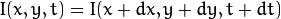
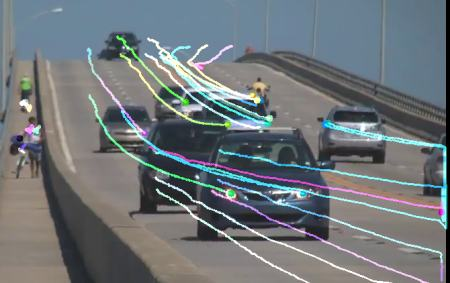
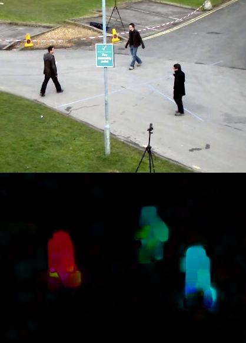

Optical flow is the pattern of apparent motion of image objects between two consecutive frames caused by the movemement of object or camera. It is 2D vector field where each vector is a displacement vector showing the movement of points from first frame to second. Consider the image below (Image Courtesy: Wikipedia article on Optical Flow).
It shows a ball moving in 5 consecutive frames. The arrow shows its displacement vector. Optical flow has many applications in areas like :
- Structure from Motion
- Video Compression
- Video Stabilization ...
Optical flow works on several assumptions:
Consider a pixel in first frame (Check a new dimension, time, is added here. Earlier we were working with images only, so no need of time). It moves by distance in next frame taken after time. So since those pixels are the same and intensity does not change, we can say,

Then take taylor series approximation of right-hand side, remove common terms and divide by to get the following equation:
where:
Above equation is called Optical Flow equation. In it, we can find and , they are image gradients. Similarly is the gradient along time. But is unknown. We cannot solve this one equation with two unknown variables. So several methods are provided to solve this problem and one of them is Lucas-Kanade.
We have seen an assumption before, that all the neighbouring pixels will have similar motion. Lucas-Kanade method takes a 3x3 patch around the point. So all the 9 points have the same motion. We can find for these 9 points. So now our problem becomes solving 9 equations with two unknown variables which is over-determined. A better solution is obtained with least square fit method. Below is the final solution which is two equation-two unknown problem and solve to get the solution.
( Check similarity of inverse matrix with Harris corner detector. It denotes that corners are better points to be tracked.)
So from user point of view, idea is simple, we give some points to track, we receive the optical flow vectors of those points. But again there are some problems. Until now, we were dealing with small motions. So it fails when there is large motion. So again we go for pyramids. When we go up in the pyramid, small motions are removed and large motions becomes small motions. So applying Lucas-Kanade there, we get optical flow along with the scale.
OpenCV provides all these in a single function, cv2.calcOpticalFlowPyrLK(). Here, we create a simple application which tracks some points in a video. To decide the points, we use cv2.goodFeaturesToTrack(). We take the first frame, detect some Shi-Tomasi corner points in it, then we iteratively track those points using Lucas-Kanade optical flow. For the function cv2.calcOpticalFlowPyrLK() we pass the previous frame, previous points and next frame. It returns next points along with some status numbers which has a value of 1 if next point is found, else zero. We iteratively pass these next points as previous points in next step. See the code below:
import numpy as np
import cv2
cap = cv2.VideoCapture('slow.flv')
# params for ShiTomasi corner detection
feature_params = dict( maxCorners = 100,
qualityLevel = 0.3,
minDistance = 7,
blockSize = 7 )
# Parameters for lucas kanade optical flow
lk_params = dict( winSize = (15,15),
maxLevel = 2,
criteria = (cv2.TERM_CRITERIA_EPS | cv2.TERM_CRITERIA_COUNT, 10, 0.03))
# Create some random colors
color = np.random.randint(0,255,(100,3))
# Take first frame and find corners in it
ret, old_frame = cap.read()
old_gray = cv2.cvtColor(old_frame, cv2.COLOR_BGR2GRAY)
p0 = cv2.goodFeaturesToTrack(old_gray, mask = None, **feature_params)
# Create a mask image for drawing purposes
mask = np.zeros_like(old_frame)
while(1):
ret,frame = cap.read()
frame_gray = cv2.cvtColor(frame, cv2.COLOR_BGR2GRAY)
# calculate optical flow
p1, st, err = cv2.calcOpticalFlowPyrLK(old_gray, frame_gray, p0, None, **lk_params)
# Select good points
good_new = p1[st==1]
good_old = p0[st==1]
# draw the tracks
for i,(new,old) in enumerate(zip(good_new,good_old)):
a,b = new.ravel()
c,d = old.ravel()
mask = cv2.line(mask, (a,b),(c,d), color[i].tolist(), 2)
frame = cv2.circle(frame,(a,b),5,color[i].tolist(),-1)
img = cv2.add(frame,mask)
cv2.imshow('frame',img)
k = cv2.waitKey(30) & 0xff
if k == 27:
break
# Now update the previous frame and previous points
old_gray = frame_gray.copy()
p0 = good_new.reshape(-1,1,2)
cv2.destroyAllWindows()
cap.release()
(This code doesn’t check how correct are the next keypoints. So even if any feature point disappears in image, there is a chance that optical flow finds the next point which may look close to it. So actually for a robust tracking, corner points should be detected in particular intervals. OpenCV samples comes up with such a sample which finds the feature points at every 5 frames. It also run a backward-check of the optical flow points got to select only good ones. Check samples/python2/lk_track.py).
See the results we got:

Lucas-Kanade method computes optical flow for a sparse feature set (in our example, corners detected using Shi-Tomasi algorithm). OpenCV provides another algorithm to find the dense optical flow. It computes the optical flow for all the points in the frame. It is based on Gunner Farneback’s algorithm which is explained in “Two-Frame Motion Estimation Based on Polynomial Expansion” by Gunner Farneback in 2003.
Below sample shows how to find the dense optical flow using above algorithm. We get a 2-channel array with optical flow vectors, . We find their magnitude and direction. We color code the result for better visualization. Direction corresponds to Hue value of the image. Magnitude corresponds to Value plane. See the code below:
import cv2
import numpy as np
cap = cv2.VideoCapture("vtest.avi")
ret, frame1 = cap.read()
prvs = cv2.cvtColor(frame1,cv2.COLOR_BGR2GRAY)
hsv = np.zeros_like(frame1)
hsv[...,1] = 255
while(1):
ret, frame2 = cap.read()
next = cv2.cvtColor(frame2,cv2.COLOR_BGR2GRAY)
flow = cv2.calcOpticalFlowFarneback(prvs,next, None, 0.5, 3, 15, 3, 5, 1.2, 0)
mag, ang = cv2.cartToPolar(flow[...,0], flow[...,1])
hsv[...,0] = ang*180/np.pi/2
hsv[...,2] = cv2.normalize(mag,None,0,255,cv2.NORM_MINMAX)
rgb = cv2.cvtColor(hsv,cv2.COLOR_HSV2BGR)
cv2.imshow('frame2',rgb)
k = cv2.waitKey(30) & 0xff
if k == 27:
break
elif k == ord('s'):
cv2.imwrite('opticalfb.png',frame2)
cv2.imwrite('opticalhsv.png',rgb)
prvs = next
cap.release()
cv2.destroyAllWindows()
See the result below:

OpenCV comes with a more advanced sample on dense optical flow, please see samples/python2/opt_flow.py.